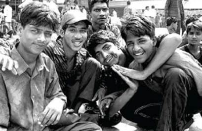
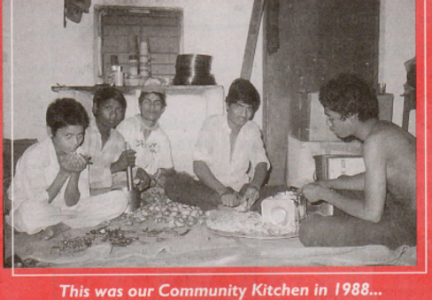
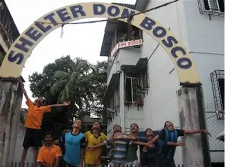

History
Shelter Don Bosco - Hopeful for a better tomorrow
In 1986, the Salesian Society in Mumbai, in preparation for Don Bosco’s death centenary celebrations decided to trace their apostolate back to their roots in Don Bosco’s work. The situation of the children on the streets of Mumbai was similar to that of the Turin of Don Bosco’s time, where many of the rural and urban poor, especially the children flocked to Mumbai city seeking work and a better life but were subject to exploitation, neglect, poverty and deprivation. As the Salesian Society (founded by Don Bosco, consisting of priests, brothers and sisters, volunteers, benefactors and the past pupils) decided to respond to this need, Shelter Don Bosco was conceived in the year 1987. Rev Fr. Bosco Pereira and Rev Fr. Raphael Lobo, who initiated the establishment of this institution, spent the first year surveying the area and studying their situations, visiting other institutions and Non Governmental Organizations working with these children to learn more about their problem.
 The priests at Shelter Don Bosco then conducted an informal study on the needs of the children which was presented to them in the form of a big 'Mela', a celebration or gathering. Thus in 1988, in a grand Mela or a gathering of 3000 street children was organized on the grounds of Don Bosco High School, Matunga. While varied entertainment was organized for them, several dignitaries holding important government posts, ministers and other famous sportspersons were invited to interact with these children. The experience was a unique one for the street children who asked for a similar Mela every month. Following this study, SHELTER DON BOSCO (to be called Shelter in future) was started as an open house for the roofless, rootless street children of Mumbai wherein any child or young person living on the street could walk in to seek help for their small needs and move back onto the streets.

1995 - 1998 was the period when the project at Shelter Don Bosco was reviewed and it was
observed that the boys residing at Shelter on a daily basis had increased to almost a
hundred. A majority of these boys were between 14 to 24 years of age, most of whom were
engaged in some work, which earned them enough to cover their daily expenses on food,
clothing and other requirements. Most of them worked in the unorganized sector, helping
in the wedding work called ' WADI ' and earned around 80 Rupees, when there was work,
which was seasonal in nature. When there was no work most of them engaged themselves in
scrap picking and temporary casual labor jobs.
These boys had minimal savings and erratic incomes. The vices which they had picked up
on the streets such as substance abuse (smoking tobacco, charas, ganja, chewing tobacco,
consuming alcohol), visiting commercial sex workers / prostitutes, gambling, watching
movies, etc. filled whatever leisure time they had.
 Interestingly, within a year the ratio of the younger children increased dramatically. By 1996,there were over 70 younger boys most of whom were too young for skill training. Through regular non-formal education sessions, their interest in formal education was ascertained and on an experimental basis, four of the boys were sent to the nearby government school. This proved to be a huge success and was followed by many groups of boys, who opted to attend regular government schools. The numbers thus increased from 4 to the present 70+. In the year 1996, as focus shifted with the younger children being enrolled in schools and the older boys went for non formal skill training, those who did not fit into either group continued to carry on rag picking and Wadi work. A 3-day camp was held with boys in the age range of 14 to 18 years to reflect and seek alternatives to the Wadi and rag picking by learning trades like cycle repairing, motor winding, tailoring and so on. At this stage Shelter took a stand by assuring the boys of taking on the responsibility of maintaining them and their expenses on food, clothing and shelter in the course of their training if they chose to opt out of the Wadi and scrap picking to start formal training. Thus members of this camp opted to join the training group.
<
Let's Make A Change
| Brach Name: Corporation Bank | Branch Name: Wadala Branch |
| Branch Code No: 106 | |
| Bank Address: | 42, G.D. Ambedkar Marg, Indian Printing House, Nr. Ram Mandir, Opp. Wadala Post Office, Wadala West, Mumbai - 400031 |
| Bank Telephone: | +91 022 2415 0950 |
| IFSC NO : CORP0000106 | MICR CODE NO : 400017020 |
| Beneficiary: Shelter Don Bosco | Contact Person: Director / Administrator |
| Contact Number: | +91 9769002609 +91 22 24150562 |
Local Bank Account Details - Within India
| Beneficiary A/C No: | 520101063188021 |
| Account Type : Savings | Swift Code No: CORPINBB |
Foreign Bank Account Details -Overseas Donations
| Beneficiary A/C No: | 520101063187041 |
| Beneficiary Address: | Opp. St. Joseph's High School, Wadala West, Mumbai, Maharashtra, India – 400031, |
| Telephone Number: +91 022 24150562 | Email Address: shelterdb@gmail.com |